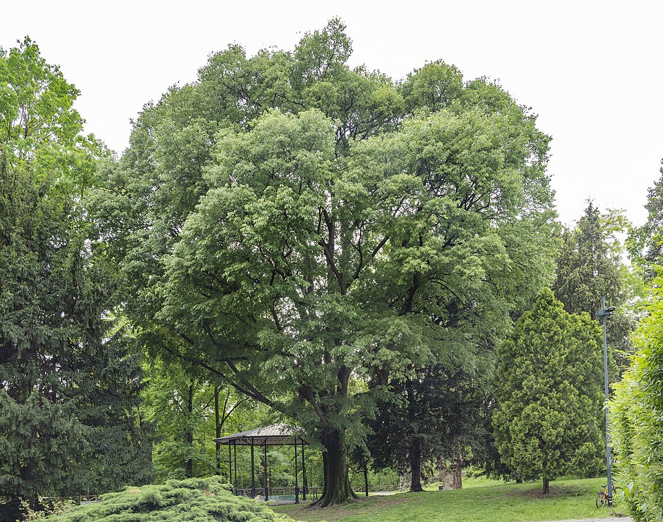

Celtis — Hackberry (Celtis)
A scrappy, fast-moving generalist that survives anywhere — limestone rubble, bottomland flood, urban grit — landing medium-weight blows with flexible shock-resistant wood and never complaining about the conditions.
Combat flavor
Celtis is the opportunist skirmisher — fast deployment, mid-tier damage, and unparalleled adaptability that lets it operate on any terrain tile without penalty. Signature ability: a resilience passive that prevents debuffs from poor soil or environmental conditions.
Real-world facts
Typical / max height15–25 m typical; up to 40 m (39 m) in ideal bottomland conditions
Lifespan150–200 years (moderately long-lived hardwood)
Wood595 kg/m³ air-dry; Janka 880 lbf (3,910 N) — moderate hardness, flexible, shock-resistant; described as "heavy but soft" with limited commercial timber value but good for tool handles and sporting goods
Growth speedfast (up to 60 cm/year on good sites)
Ecology / notable traitsExtremely wide climatic tolerance — grows from Great Plains (360 mm rain/yr) to humid Southeast (1,520 mm/yr); prefers limestone-rich soils; important wildlife food tree (berries consumed by 25+ bird species); often develops distinctive "witches' broom" galls from a mite-fungus complex; not invasive but highly adaptable; related genera include famous sugarberries and Mediterranean nettle trees
Gallery
